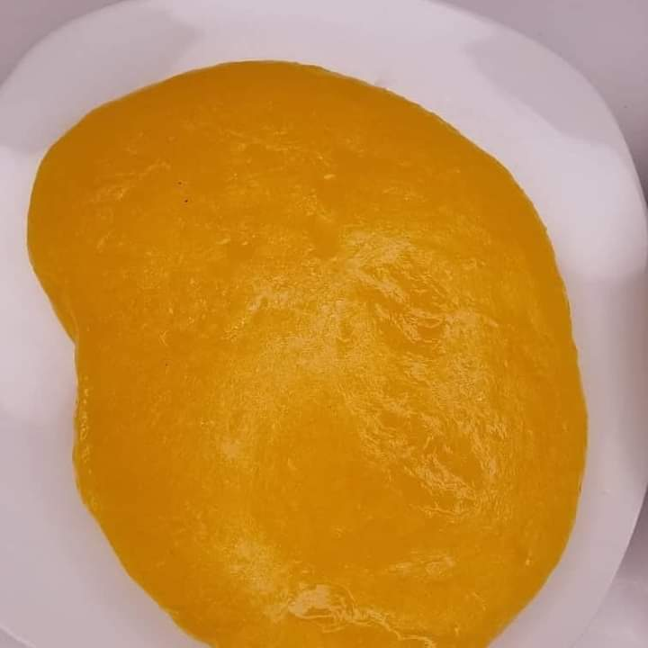

My Favourite Meal
My favourite meal is banga soup also known as Palm nut soup. It is a delicious soup made from palm nut fruit,
assorted spices and a variety of meat and fish. It is popular in the Niger Delta part of Nigeria especially the Itsekiri and the Urhobo ethnic groups.
I will be taking you through the process of preparing the meal. in this receipe I opted for fresh catfish, assorted meat and dry fish.
Ingredients:
- 400g Palm nut concentrate
- 1-2 tbp banga spice
- 1-2tbp Beletete leaves
- 1 fresh catfish
- 200g dryfish
- 1/2 cup dried crayfish or prawns blended
- 2-3 scotch bonnet blended or more depending on how hot you want the soup
- 1 cup of periwinkle
- 2 seasoning cubes
- Salt to taste
- 5-7 cups of water
Preparation of the Palm Fruit concentrate
The Palm Nut concentrate has to be prepared first which is the major ingredient of banga soup.
- The palm fruit is boiled till it is soft.
Palm fruit
- Transfer the boiled palm fruit to a mortar and pound till the shaft separates from the kernel
Pounded Palm fruit
- Add warm water to the pounded palm fruit to extract the concentrate
- Drain with a sieve into a pot and boil it
Palm Fruit Extract
Instructions to Prepare Banga Soup
- Rinse the meat, add the diced onions, Cameroon pepper, seasoning powder, and salt. Stir and leave to cook till the meat becomes tender.
- Wash the catfish
- To the boiled palm fruit extract, add blended scotch bonnet, assorted beef/meat and cook for another 10-15 minutes
- Add the washed dry fish, blended crayfish and meat stock
- Add the banga spices and oburunbebe stick
- Add seasoning cubes
- Allow to boil for another 15mins
- Allow to boil till the oil floats
- Add the washed fresh catfish, shrimps and the periwinkle
- Allow to boil till soup thickens
Serving Banga Soup
Banga soup is best eaten with Starch. Just in case you want to know what the STARCH looks like, take a look at the picture below

Banga soup is best served using Native Pot, it adds a unique taste to the soup.
Banga Soup in Native Pot
Watch out for my next post on how to prepare starch